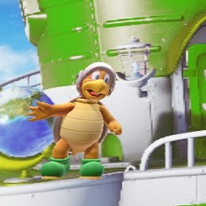

<body style="background-color: #190064; color:white;">
    <span style="font-family: 'Segoe UI', Tahoma, Geneva, Verdana, sans-serif; font-size: large;">HBroHei.github.io</span>
    <hr>
    <!--<a href="top" style="color:#00f7ff">Back to Top</a>-->
    Hosted on Github Page
    <br>
    <br>
    <div style="display: inline-flex; text-align:center;">
        <div style=" background-color: rgb(0, 253, 190); width:max-content; margin: 1vw; display:block; text-align:center;">
            <a href="youtube.com/Hammer_Bro_Hei" style=" text-align: center;">Visit my channel</a>
        </div>
        <div style="background-color: rgb(0, 160, 253); width:max-content;  margin: 1vw; float:inline-end; height:20vh">
            <a href="youtube.com/Hacked_BroHei" style=" text-align:center;"><!---->Visit my secondary channel</a>
        </div>
        
    </div>
    <br>
    <span style="font-family: Arial, Helvetica, sans-serif; font-weight: bolder;">
        To reflect on how my (and other) videos perform, I recommend installing the "Return YouTube Dislike" Plugin
    </span>
</body>